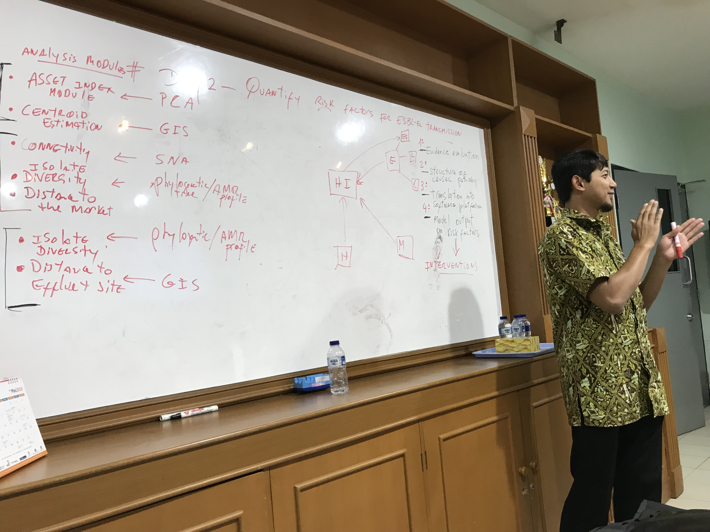

Research into antimicrobial resistance
Environmental and animal drivers of antimicrobial resistance
Veterinary antimicrobial stewardship in Thai Nguyen, Vietnam

Countries dominated by smallholder systems are likely to be less responsive to such ‘top-down’ approaches. Vietnam has developed a National Action Plan on AMR and AMU reduction in livestock and aquaculture and is working to increase awareness of the problem. However, there remain significant challenges to achieving widespread AMS in farming communities. Effective AMS policy and action in Vietnam will need to be sensitive to the needs of farming communities.
SpatialEpiLab’s involvement
This research contributes to the global effort for greater antimicrobial stewardship (AMS). Beyond implications for the communities studied, the research yields a transferrable approach to contextualising antimicrobial practices in smallholder farming communities. Further, systems practice brings community stakeholders together in support of livelihood-sensitive policy and action for AMS. Concrete, community-developed recommendations for improving AMS are being considered and/or implemented.
Key collaborators
International Livestock Research Institute, Vietnam
Faculty of Animal Science and Veterinary Medicine, Thai Nguyen University of Agriculture and Forestry, Vietnam
Centre for Public Health and Ecosystem Research, Hanoi University of Public Health, Hanoi, Vietnam
Faculty of Economics and Rural Development, Vietnam National University of Agriculture
FocusGroupGo Vietnam
World Health Organization EpiX

DNA sequencing-based approaches combined with phylodynamic algorithms and statistical network theory can play an important role in this endeavour. The World Health Organization is leading to multi-year, multi-population epidemiological surveys of anti-microbial resistance in naturally occurring populations of key bacterial pathogens. This project will generate a more complete understanding of transmission events that mediate the spread of resistant isolates and facilitate population-specific monitoring and prevention programmes aimed at limiting the emergence of disease-causing bacteria.
SpatialEpiLab’s involvement
Team members on the project
Nicholas Clark
Pandji Dhewantara
Javier Cortes Ramirez